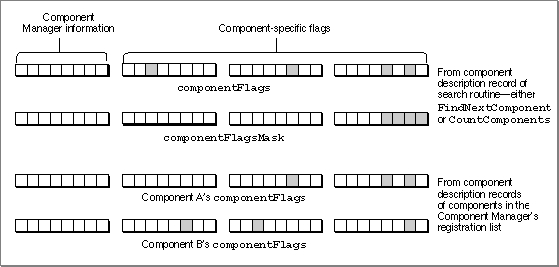

Legacy Document
Important: The information in this document is obsolete and should not be used for new development.
Important: The information in this document is obsolete and should not be used for new development.


Data Structures for Applications
This section describes the format and content of the data structures used by applications that use components.Your application can use the component description record to find components that provide specific services or meet other selection criteria.
The Component Description Record
The component description record identifies the characteristics of a component, including the type of services offered by the component and its manufacturer.Applications and components use component description records in different ways.
An application that uses components specifies the selection criteria for finding a component in a component description record. A component uses the component description record to specify its registration information and capabilities. If you are developing a component, see page 6-50 for information on how a component uses the component description record.The
ComponentDescriptiondata type defines the component description record.
TYPE ComponentDescription = RECORD componentType: OSType; {type} componentSubType: OSType; {subtype} componentManufacturer: {manufacturer} OSType; componentFlags: LongInt; {control flags} componentFlagsMask: LongInt; {mask for control } { flags} END;Figure 6-3 Interaction between the
Field Description
componentType- A four-character code that identifies the type of component. All components of a particular type must support a common set of interface routines. For example, drawing components all have a component type of
'draw'.- Your application can use this field to search for components of a given type. You specify the component type in the
componentTypefield of the component description record you supply to theFindNextComponentorCountComponentsroutine. A value of 0 operates as a wildcard.componentSubType- A four-character code that identifies the subtype of the component. Different subtypes of a component type may support additional features or provide interfaces that extend beyond the standard routines for a given component type. For example, the subtype of drawing components indicates the type of object the component draws. Drawing components that draw ovals have a subtype
of'oval'.- Your application can use the
componentSubTypefield to
perform a more specific lookup operation than is possible using only thecomponentTypefield. For example, you may want your application to use only components of a certain
component type ('draw') that also have a specific entry
in thecomponentSubTypefield ('oval'). By specifying particular values for both fields in the component description record that you supply to theFindNextComponentorCountComponentsroutine, your application retrieves information about only those components that meet both of these search criteria. A value of 0 operates as a wildcard.componentManufacturer- A four-character code that identifies the manufacturer of the component. This field allows for further differentiation between individual components. For example, components made by a specific manufacturer may support an extended feature set. Components provided by Apple use a manufacturer value
of'appl'.- Your application can use this field to find components from a certain manufacturer. Specify the appropriate manufacturer code in the
componentManufacturerfield of the component description record you supply to theFindNextComponentorCountComponentsroutine. A value of 0 operates as a wildcard.componentFlags- A 32-bit field that provides additional information about a particular component.
- The high-order 8 bits are defined by the Component Manager. You should usually set these bits to 0.
- The low-order 24 bits are specific to each component type. These flags can be used to indicate the presence of features or capabilities in a given component.
- Your application can use these flags to further narrow the search criteria applied by the
FindNextComponentorCountComponentsroutine. If you use thecomponentFlagsfield in a component search, you use thecomponentFlagsMaskfield to indicate which flags are to be considered in the search.componentFlagsMask- A 32-bit field that indicates which flags in the
componentFlagsfield are relevant to a particular component search operation.- For each flag in the
componentFlagsfield that is to be considered as a search criterion by theFindNextComponentorCountComponentsroutine, your application should set the corresponding bit in thecomponentFlagsMaskfield to 1. The Component Manager considers only these flags during the search. You specify the desired flag value (either 0 or 1) in thecomponentFlagsfield.- For example, to look for a component with a specific control flag that is set to 0, set the appropriate bit in the
ComponentFlagsfield to 0 and the same bit in theComponentFlagsMaskfield to 1. To look for a component with a specific control flag that is set to 1,
set the bit in theComponentFlagsfield to 1 and the same bit in
theComponentFlagsMaskfield to 1. To ignore a flag, set the bit
in theComponentFlagsMaskfield to 0.- Figure 6-3 shows how the various fields interact during a search. In the case depicted in the figure, the
componentFlagsMaskfield of a component description record supplied to a search routine specifies that only the low-order four flags of thecomponentFlagsfield are to be examined during the search. ThecomponentFlagsfields in the component description records of components A and B have a number of flags set. However, in this example the mask specifies that the Component Manager examine only the low-order 4 bits, and therefore only component A meets the search criteria.componentFlagsandcomponentFlagsMaskfields